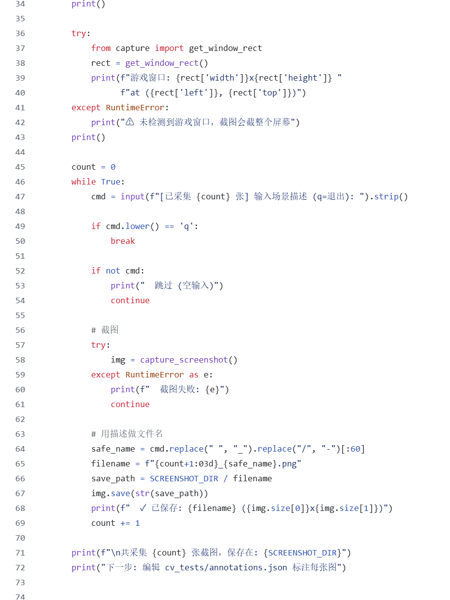
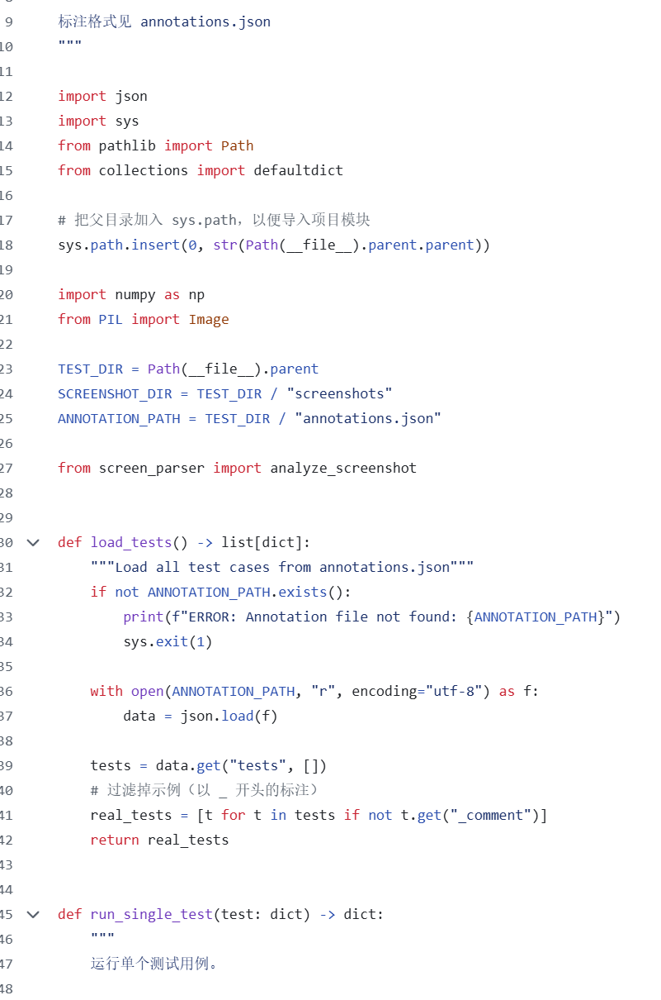

Shogun AI — Game Auto-Play
A Python program that plays Shogun Showdown on its own

As my first AI project, I attempted to automate the commercial game Shogun Showdown using OpenCV for screenshot-based state recognition (health, positions, cooldowns) and simulated keypresses. The system integrated a 600+ line rule engine alongside Ollama and Claude API decision backends.
Some of the code


Expectation vs. Reality
Computer vision proved far too imprecise, frequently misreading states without direct game data access, forcing me to add heavy deadlock protection and fallback checks. Though flawed, this failure provided invaluable hands-on experience, teaching me OpenCV fundamentals and inspiring me to build my own Unity environments for direct neural network integration.